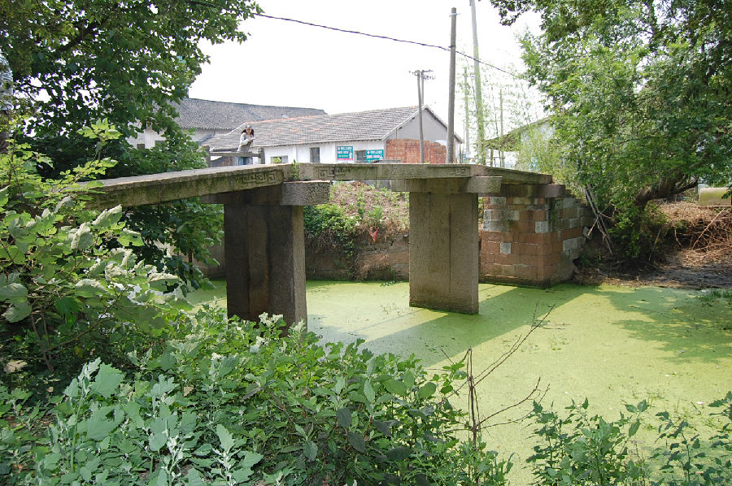

嘉兴市文物保护网 · 市级文物保护点 · 2020-11-03 · 原文

泰石桥位于嘉兴市秀洲区洪合镇泰石桥村汤家场自然村，始建年代不详，桥额旁镌有“道光乙巳重建，民国三年重修”字样，可见现桥重建于道光二十五年（乙巳，1845），重修于民国三年（1914）。南北向跨泰石桥港，系三孔无栏梁式石板桥。桥全长17.3米，桥面宽1.6米，落坡宽1.8米，桥底距水面高度2.8米。落坡略呈喇叭状，南北各有石阶6级和7级。东西桥首有“重建泰石桥”额，桥身刻有花纹。东西两侧有桥联，北桥柱东联：“击壤兴歌履泰当盛世”，西联：“东传渔唱小艇出长塘。”因南侧水深，南桥柱东西两侧楹联未录得。泰石桥形制较完整，造型美观、大方，具有一定的历史和艺术价值。2009年公布为嘉兴市文物保护点。